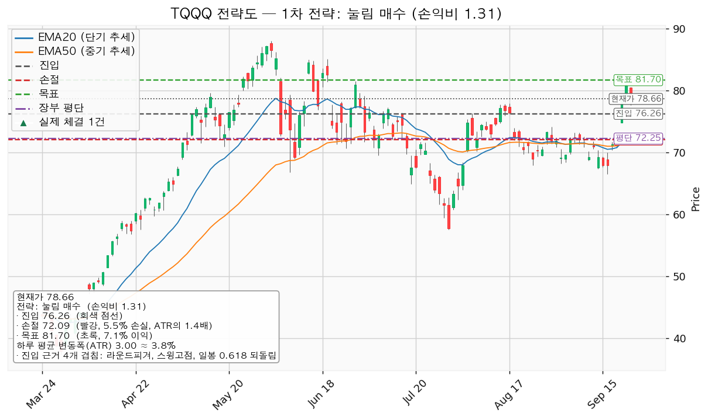
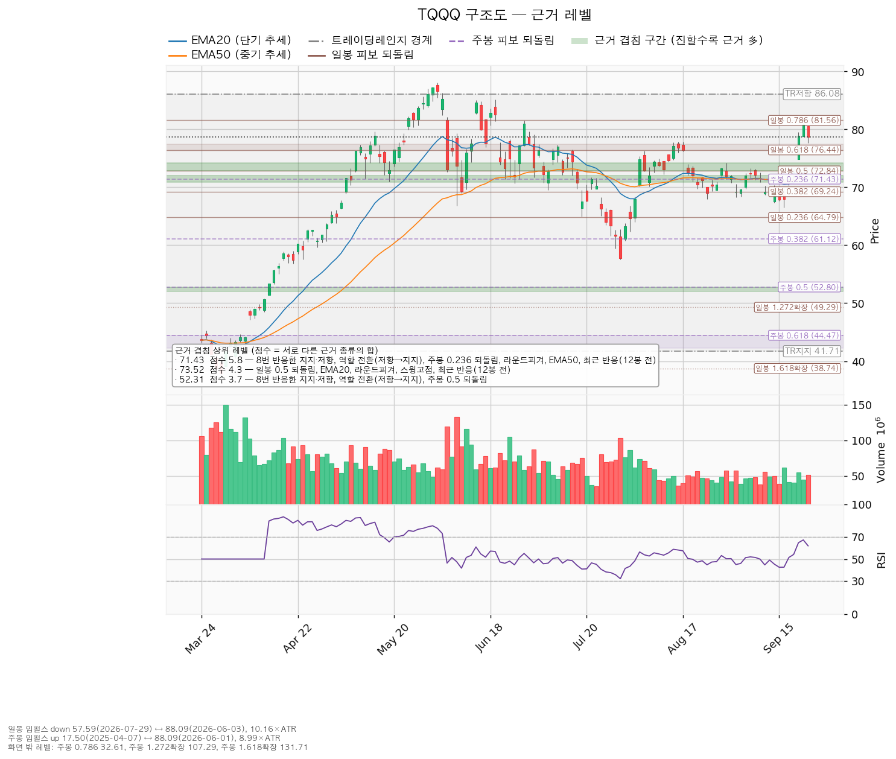
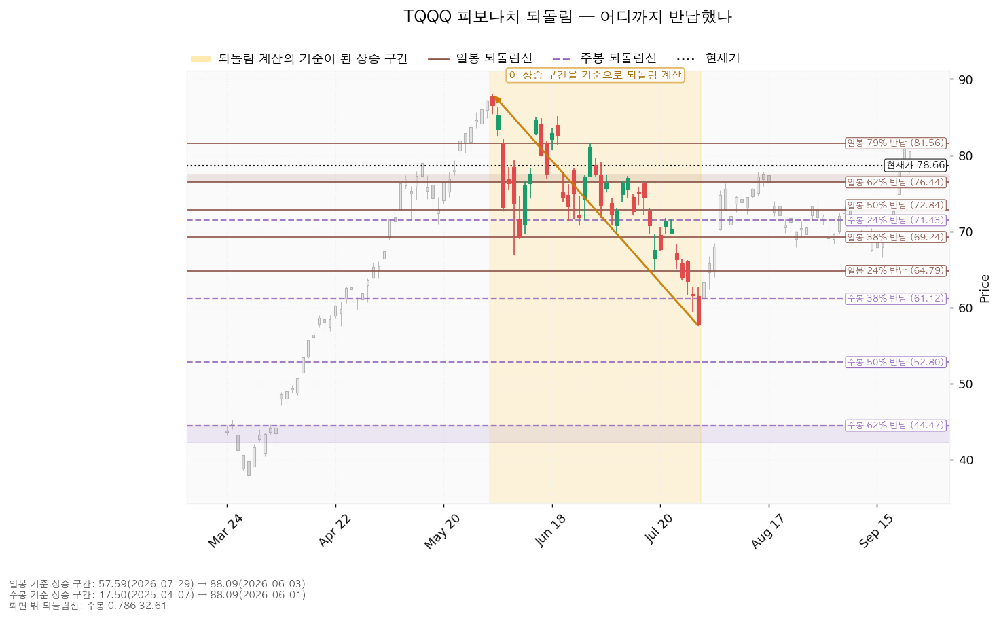
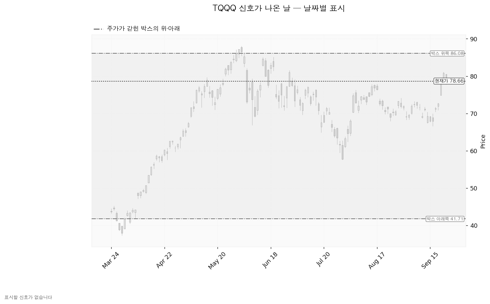

TQQQ는 나스닥 100 지수의 하루 수익률을 3배로 따라가도록 설계된 미국 상장 레버리지 ETF입니다. 개별 기업이 아니라 지수 파생 상품이라 매출·이익 같은 실적 자료가 없습니다.
| 기준선 | 가격 | 판정 방식 | 지금 상태 |
|---|---|---|---|
| 회복선(진입 조건) | 76.26달러 | 그 가격까지 눌릴 때 매수, 일봉 종가가 그 아래로 마감하면 신규 매수 중단 | 현재가 위 (-3.05%, 하루 평균 변동폭의 0.80배 아래) |
| 집행 손절 | 72.09달러 | 장중 저가 터치 | 보유 5주가 있어 지금 유효 |
| 관망 종료 기준 | 73.26달러 | 일봉 종가 이탈 | 유지 중 (이 리포트의 매수 계획 종료 · 보유분은 72.09달러 손절이 따로 판정) |
| 확인선 | 86.08달러 | 일봉 종가 돌파 후 되돌림 지지 확인 | 미돌파 (+9.43%) |
| 폐기선 | 41.71달러 | 이탈 후 3거래일 내 회복 실패(또는 그 전에 38.70달러 아래 종가) + 반등에서 저항 확인 | 유지 중 (-46.97%, 하루 평균 변동폭의 12.31배 아래 — 실무상 작동하지 않음) |
미달 두 항목은 눌림 매수 자리로서의 준비가 덜 됐다는 뜻입니다. 되돌림 구간인데 거래량이 아직 줄지 않아 파는 쪽이 남아 있고, 지수 대비 비율은 20일 기준으로 앞서 있으나 60일 신고가는 내지 못했습니다.
| 항목 | 값 |
|---|---|
| 셋업 | 눌림 매수 · 구조 증명도 선취형(구조 미확인) |
| 엣지 | 평균회귀 — "지지로 눌릴 때 산다". 승률이 높고 이익 폭이 작은 유형이며 저항에서 전량 청산이 정합적입니다 |
| 진입 | 76.26달러 — 근거 4개 겹침(3.3점): 라운드피겨 + 스윙고점 + 일봉 0.618 되돌림 + 26봉 전 실제 반응, 구간 76.00~76.44달러 |
| 손절 | 72.09달러 — 근거 겹침 구간(72.84~74.18달러, 4.3점) 바로 아래. 손절 폭 4.17달러 = 1.39 ATR (-5.46%) |
| 목표 | 81.70달러 전량 청산 — 근거 3개 겹침(2.8점): 스윙고점 + 일봉 0.786 되돌림 + 라운드피겨 |
| 손익비 | `1:1.31` (손절 폭 1.39 ATR) |
손절 72.09달러는 겹침 구간 안이 아니라 그 아래에 둔 구조적 손절입니다. 손절을 구간 안쪽으로 조여 손익비를 부풀리지 않았으므로, 위 `1:1.31`이 곧 구조적 손절 기준 손익비입니다.
대표로 고른 이유: 손익비 1.31 × 구조 증명도(선취형) × 근거 겹침 3.3점으로 선정했고, 지수 대비 20일 초과수익 +13.29%를 반영해 순위에 1.1배를 곱했습니다. 다른 후보는 81.70달러 돌파 매수입니다 — 진입 81.70달러(근거 3개 겹침 2.8점: 스윙고점 + 일봉 0.786 되돌림 + 라운드피겨), 손절 75.25달러, 목표 84.56달러, 손익비 `1:0.44`로 1 미만이라 패스입니다. 구조 증명도는 돌파 확인형으로 더 높지만 돌파 구간인데 거래량이 20일 평균의 1.15배에 그쳤습니다. 선취형은 구조가 증명되기 전에 되돌림에서 먼저 잡는 방식이라 진입가는 유리하고 실패 확률이 높습니다.
진입 76.26달러에서 목표 81.70달러까지는 하루 평균 변동폭의 1.81배로 2배에 못 미칩니다. 그래서 분할 청산과 트레일링을 걸지 않고 81.70달러에서 전량 청산합니다(이 2배는 관행적 기준이지 정설이 아닙니다). 엔진은 중간 목표 77.90달러에서 절반을 덜어내고 잔여분 손절을 진입가로 올리는 안도 함께 냈는데, 그렇게 나누면 전 구간 손익비가 0.85로, 절반 익절 뒤 본전 손절에 걸리면 0.20으로 내려갑니다. 집행 정책이 단일 청산이라 이 안은 쓰지 않습니다. 81.70달러는 목표이면서 동시에 상승 전환 1단계 기준선이라 두 갈래로 갈립니다 — 그 가격에서 막히고 되밀리면 전량 청산이고, 일봉 종가로 넘기면 상승 전환이 시작된 것이며 그때는 이 포지션의 연장이 아니라 새 셋업으로 다시 잡습니다.
계획 진입가 76.26달러는 장부 평단 72.25달러보다 위입니다. 평단을 낮추는 매수가 아니라 평단을 올리는 추가 매수입니다.

| 단계 | 트리거 | 뜻과 행동 |
|---|---|---|
| 관찰 | 일봉 종가가 76.26달러 아래로 마감 | 구조 이탈 시작. 되돌아 올라오면 속임수 하락일 수 있어 아직 무효가 아닙니다. 신규 매수만 중단하고 손절은 그대로 둡니다 |
| 경고 | 이탈 후 3거래일 안에 76.26달러를 종가로 회복하지 못함, 또는 그 전에 일봉 종가가 73.26달러 아래로 마감(하루 평균 변동폭의 1배만큼 더 밀림) — 둘 중 먼저 오는 쪽 | 되돌림 지지를 잃을 가능성이 우세해집니다. 잔여 비중을 줄이고 반등에서의 반응을 확인합니다 |
| 무효 | 반등이 76.26달러에서 막히고 그 아래로 되밀림(지지가 저항으로 전환) | 셋업 폐기. 포지션을 정리하고 새 구조가 만들어질 때까지 관망합니다 |
집행 손절 72.09달러는 구조가 몇 단계에 있든 무관하게 작동합니다. 장중에 잠깐 가격을 내주는 것은 세 단계 어디에도 해당하지 않습니다.
폐기선 41.71달러는 현재가에서 하루 평균 변동폭의 12.31배 아래라 실무상 무효화 기준으로 작동하지 않습니다. 지수 추종 상품이라 실적 발표가 없어 실적 수치로 논지를 무효화할 수도 없습니다. 대신 위 73.26달러 종가 이탈을 논지 종료선으로 쓰고, 날짜 쪽 확인 항목은 아래 확인 캘린더의 매크로 일정으로 대신합니다.
상승 전환 — 81.70달러를 일봉 종가로 회복한 뒤 되돌림에서 지지되고, 이어 86.08달러를 종가로 넘기는 경로입니다. 이때는 위에 적은 대로 81.70달러에서 한 번 전량 청산하고 새 셋업으로 다시 잡습니다.
횡보 지속 — 41.71달러를 지키면서 86.08달러 아래 박스가 유지되는 경로입니다. 구조는 그대로이고 매물 소화에 시간이 필요한 국면이며 부정적 신호가 아닙니다. 추적할 것은 셋입니다 — 지지 테스트마다 매도 거래량이 줄어드는지, 저점이 절상되는지, 오를 때 거래량이 늘어나는지. 현재 관측치는 지지 테스트 거래량 혼조, 레인지 안에서 저점 절하, 상승봉 대 하락봉 거래량비 0.91입니다.
시나리오 폐기 — 41.71달러를 이탈한 뒤 3거래일 안에 회복하지 못하거나 그 전에 38.70달러 아래로 종가 마감하고, 반등에서 41.71달러가 저항으로 확인되는 경로입니다. 매집이 아니라 재분산이었다는 뜻이며 추가 저점 갱신 가능성이 열립니다. 포지션을 정리하고 새 바닥과 새 박스가 만들어질 때까지 관망합니다.
| 가격 | 겹침 점수 | 근거 |
|---|---|---|
| 71.43달러 (70.84~72.04) | 5.8 | 8번 반응한 지지·저항 + 역할 전환(저항→지지) + 주봉 0.236 되돌림 + 라운드피겨 + EMA50, 12봉 전 실제 반응 |
| 73.52달러 (72.84~74.18) | 4.3 | 일봉 0.5 되돌림 + EMA20 + 라운드피겨 + 스윙고점, 12봉 전 실제 반응 |
| 76.26달러 (76.00~76.44) | 3.3 | 라운드피겨 + 스윙고점 + 일봉 0.618 되돌림, 26봉 전 실제 반응 |
| 81.70달러 (81.54~82.00) | 2.8 | 스윙고점 + 일봉 0.786 되돌림 + 라운드피겨 |
| 86.08달러 | 1.2 | 레인지 상단 하나뿐 |
확인선 86.08달러는 박스 상단과 같은 가격이고 받치는 근거가 레인지 경계 하나뿐입니다. 위쪽에서 근거가 가장 두꺼운 가격은 81.70달러이며, 그래서 목표를 그 자리에 뒀습니다.
박스는 180봉(약 9개월) 창으로 판정했고 41.71~86.08달러가 경계입니다. 752봉 전체를 놓고 40·90·180봉을 모두 시험한 결과 180봉이 가격을 가장 잘 담았습니다(포함도 0.967). 가격은 직전 구간(28.38~58.18달러)과 겹치는 자리에 있어 같은 횡보의 연장으로 읽힙니다. 박스 안쪽 판정은 중립입니다 — 지지 테스트 거래량이 혼조이고 레인지 안에서 저점이 절하됐으며 상승봉 대 하락봉 거래량비가 0.91이라, 매집으로도 재분산으로도 기울지 않았습니다.

일봉 되돌림은 6월 3일 고점 88.09달러에서 7월 29일 저점 57.59달러까지의 하락 구간을 기준으로 계산했습니다. 현재가 78.66달러는 0.618 되돌림 76.44달러를 지나 0.786 되돌림 81.56달러 아래에 있습니다. 주봉 되돌림은 방향이 반대로, 2025년 4월 17.50달러에서 2026년 6월 88.09달러까지의 상승을 기준으로 하며 0.236 되돌림 71.43달러가 위 71.43달러 겹침 구간에 함께 들어가 있습니다.

신호일 차트에는 표시할 캔들이 없습니다. 이 구간에서 속임수 하락·속임수 상승·강세 신호·약세 신호 어느 것도 산출되지 않았고, 국면 후보도 판정되지 않았습니다(박스 안쪽이 중립이기 때문입니다). 구조 판단은 신호가 아니라 위 겹침 가격과 박스 안쪽 관측치에 기대고 있습니다.

TQQQ는 지수 추종 ETF라 애널리스트 목표주가·투자의견·이익 추정치가 없습니다. 조회를 시도했으나 목표주가 분포, 선행 배수, 이익 성장률, 추정치 상·하향 방향, 현금흐름 항목이 모두 제공되지 않았습니다. 그래서 배수 비교·목표주가 분포·추정치 방향으로 하락의 성격을 가르는 점검·현금흐름 적자 판정·상승 여력 분해를 이 종목에는 적용할 수 없습니다. 조회된 유일한 값은 후행 배수 31.95배인데 이는 펀드가 담고 있는 나스닥 100 구성종목의 가중 배수이지 이 ETF 자체의 배수가 아니며, 선행 배수와 이익 성장률이 없어 비싸다·싸다 판정에 쓸 수 없습니다.
대신 이 상품의 방향은 나스닥 100 지수와 그 지수를 움직이는 금리·물가 일정이 정합니다. 시장 국면은 신규 진입이 가능한 쪽입니다 — S&P 500 7,706이 200일 이동평균 7,192 위이며(+7.15%), 2026년 4월 8일부터 그렇습니다.
| 날짜 | 이벤트 |
|---|---|
| 2026-09-30 | 개인소비지출 물가지수(PCE) · GDP |
| 2026-10-02 | 고용보고서(비농업 고용·실업률) |
| 2026-10-14 | 소비자물가지수(CPI) |
| 2026-10-28 | 연방공개시장위원회(FOMC) 금리 결정 |
기본 시계인 수 주 안에 10월 14일 물가지표와 10월 28일 금리 결정이 들어옵니다. 이 상품은 실적 발표가 없으므로 날짜가 있는 확인 항목은 이 매크로 일정이 전부이며, 그 이후 구간에 미리 알려진 역풍은 확인할 자료가 없습니다.
계좌 평가액 139,498,400원, 환율 1,367.14원 기준입니다. 1회 매매에서 계좌의 1%를 잃는 것을 한도로 잡으면 비중이 계좌의 18.3%가 되는데, 한 종목 상한 13%가 먼저 걸려 총 보유 173주(18,036,651원, 계좌의 12.93%)로 제한합니다. 이미 5주를 들고 있으므로 76.26달러에서 추가로 사는 것은 168주(17,515,360원)입니다. 이 경우 72.09달러 손절까지의 손실은 958,874원(계좌의 -0.69%), 81.70달러 청산 시 이익은 1,314,037원(+0.94%)입니다. 보유 5주의 현재 평가액은 537,696원이고 평단 72.25달러 대비 +43,800원입니다.
도구 적합성: 하루 평균 변동폭 3.00달러는 주가의 3.82%로 8% 기준 아래이고 손절 폭은 그 1.39배입니다. 논지와 무관한 하루치 흔들림에 손절이 체결될 폭은 아닙니다. 다만 3배 레버리지 상품이라 같은 13%라도 지수 노출은 그 세 배로 잡히며, 그래서 1% 리스크 계산보다 13% 상한이 먼저 걸리는 것을 그대로 따릅니다.
최종 판정: 보유 5주 유지, 신규 매수는 76.26달러 눌림에서 168주 집행. 손익비 `1:1.31`(손절 폭 1.39 ATR), 목표 81.70달러 전량 청산, 손절 72.09달러. 조건 점검 7/9이며 미달은 상대강도선 신고가와 거래량 강도입니다 — 되돌림 구간인데 거래량이 아직 마르지 않았다는 것이 다음에 볼 것이고, 76.26달러까지 눌리는 동안 거래량이 줄어드는지가 이 셋업의 전제입니다.
ATR: 하루 평균 변동폭. EMA20·EMA50: 20일·50일 지수이동평균. 되돌림(피보나치): 직전 상승·하락의 몇 %를 반납했는지로 잡는 가격선. 속임수 하락: 지지선을 잠깐 뚫고 곧 되돌아오는 움직임.